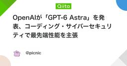
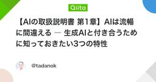
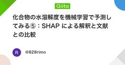

機械学習タグが付けられた新着記事 - Qiita
https://qiita.com/tags/機械学習
機械学習に関する情報が集まっています。現在15988件の記事があります。また9433人のユーザーが機械学習タグをフォローしています。
フィード

OpenAIが「GPT-6 Astra」を発表、コーディング・サイバーセキュリティで最先端性能を主張
機械学習タグが付けられた新着記事 - Qiita
はじめに2026年9月3日、OpenAI は新世代モデル「GPT-6 Astra」を公式ブログで発表しました。同社は本モデルを「これまでで最も知的かつアラインメントの進んだモデル」と位置付けており、特に コンピュータ操作(computer use)・コーディング・サイバ...
2時間前

【AIの取扱説明書 第1章】AIは流暢に間違える ― 生成AIと付き合うために知っておきたい3つの特性
機械学習タグが付けられた新着記事 - Qiita
「AIが自信ありげに答えているから、きっと正しい」そんなふうに感じたことはないでしょうか。生成AIの文章は、とても自然です。質問にすぐ答え、こちらの意図をくみ取り、複雑な内容も分かりやすく整理してくれます。一方で、文章が流暢であることと、内容が正しいことは別です。...
7時間前
TensorFlowで作ったモデルをVertex AI(現Agent Platform)にデプロイして推論を試してみた
機械学習タグが付けられた新着記事 - Qiita
はじめにWebエンジニアとして9年ほど、主にPHP/Laravelでの開発をやってきました。以前、工場向けの危険検知システムを開発する案件で、TensorFlow(CNN)を使った画像解析モデルの実装に携わったことがあります。ただ直近1年ほどは開発の現場から少し離れ気味...
13時間前

化合物の水溶解度を機械学習で予測してみる⑤：SHAP による解釈と文献との比較
機械学習タグが付けられた新着記事 - Qiita
はじめにここまで，化合物の水溶解度を予測する機械学習モデルを作成してきました．単純な6記述子から作成したベースラインモデル（①）から，RDKit記述子の追加（②），非線形モデルへの切り替え（③），フィンガープリントの導入（④）と段階的にモデルを改善してきました．最後...
13時間前